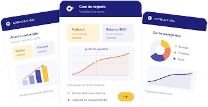

¿Cuánto ahorra realmente una red como la tuya con Clickie? Aquí está la respuesta, rubro por rubro: payback, ROI a 24 meses y ahorro sostenido, con cifras reales de nuestra cartera en LATAM. Descarga el caso de tu industria y preséntalo internamente — son los números que un comité de gerencia entiende en 5 minutos.

Sucursales que cierran a las 2 PM y siguen consumiendo a las 2 AM. Descubre por qué banca es el rubro con el ROI más alto de nuestra cartera y en cuántos meses se paga sola la inversión.
El rubro que más refrigera es el que más puede ahorrar — sin tocar la cadena de frío. Descarga el detalle financiero: payback, ROI a 24 meses y dónde aparece el ahorro.
Cada local abre 12 horas, ¿cuántos siguen gastando de noche? El caso con el payback más rápido de nuestra cartera, explicado con números que finanzas puede validar.
Abren 24/7, por eso desperdician 24/7. Es el rubro con el mayor ahorro sostenido de nuestra cartera — descarga el caso y descubre cuánto deja de perder cada local.
Cocinas a full, climas al máximo y facturas sin auditar. La misma receta operativa replica el mismo desperdicio en toda la red — mira cuánto se recupera al estandarizar el control.
Equipos encendidos antes de abrir y mucho después de cerrar. El caso que marcas como Starbucks ya aplican con Clickie: control por horario real de operación.
Grandes superficies, grandes climas, grandes facturas. El impacto financiero de gestionar la energía piso por piso, tienda por tienda, en toda la cadena.
Cientos de sucursales iguales replican el mismo desperdicio, multiplicado. La justificación financiera para estandarizar y controlar toda la red desde un solo lugar.